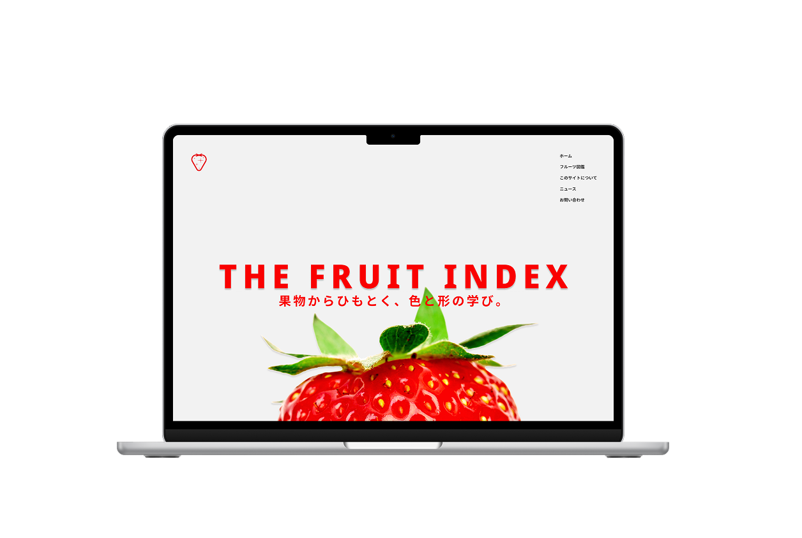

Product
Graphic
Branding
湯紬麦ビール

Role
Graphic, Branding
Tools
Adobe Illustrator, Adobe Photoshop
Period
2025.09 - 2026.01 (4 month)
コンセプト
ここに作品のコンセプトや制作背景を書きます。
どのような課題があり、それをデザインでどう解決したのかを記述すると、ポートフォリオとしての説得力が増します。
制作プロセスのラフスケッチ
工夫したポイント
特にこだわった部分や、苦労した部分についての解説を書きます。
技術的な挑戦や、ユーザー視点での配慮などをアピールします。